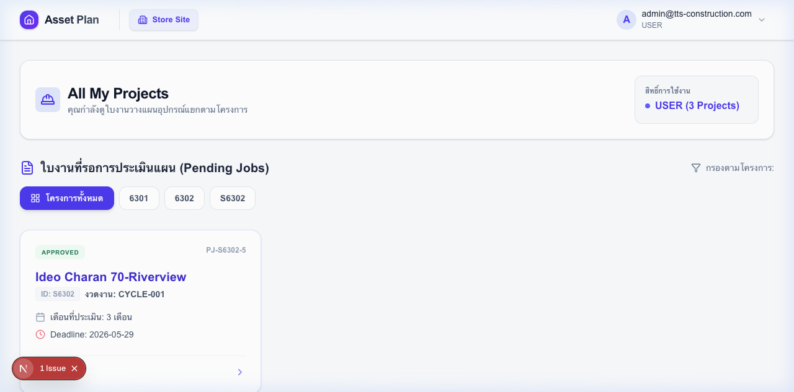
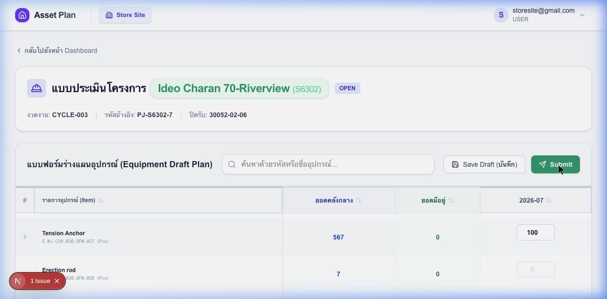
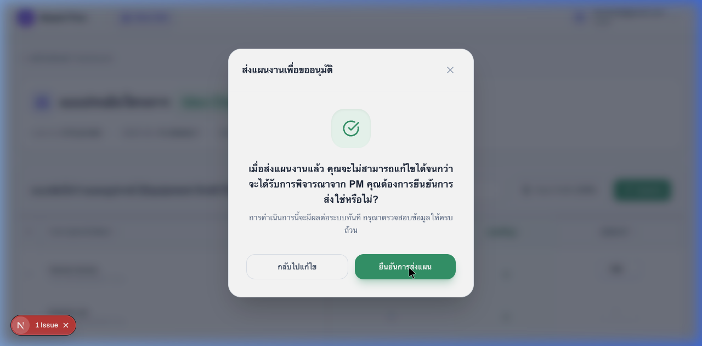

ขั้นตอนการวางแผนและส่งแผนความต้องการพัสดุรายงวด
หลังจาก Login ด้วยสิทธิ์ Store Site ให้เลือกโครงการที่คุณรับผิดชอบ ระบบจะแสดงรายการ "งวดงาน (Cycle)" ที่กำลังเปิดให้วางแผน ให้คลิกเข้าสู่ใบงาน

ในหน้าใบงาน (Worksheet) ให้ระบุจำนวนอุปกรณ์ที่ต้องการใช้ในแต่ละเดือน (Required Qty) และจำนวนของที่มีอยู่หน้างานจริง (Site Stock) เพื่อให้ระบบคำนวณความต้องการสุทธิ

หมายเหตุ: ระบบจะคำนวณยอดส่วนต่างอัตโนมัติว่าต้องขอเพิ่ม (+) หรือคืนของ (-)
เมื่อกรอกข้อมูลครบถ้วนแล้ว ให้กดปุ่ม "Submit to PM" เพื่อส่งแผนงานให้ PM ทำการตรวจสอบและอนุมัติ

คำเตือน: หลังจากส่งแผนแล้ว คุณจะไม่สามารถแก้ไขข้อมูลได้จนกว่า PM จะตีกลับ (Reject)